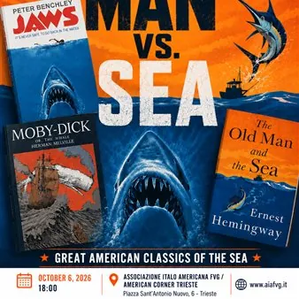

da mar 6 ott a sab 10 ott
Man vs. Sea: il rapporto tra l’uomo e il mare nell’immaginario americano
In occasione della Barcolana, l’Associazione Italo Americana FVG / American Corner Trieste presenta “Man vs. Sea”, una conferenza in lingua inglese dedicata al rapporto tra l’uomo e il mare nell’immaginario americano. L’appuntamento, in programma martedì 6 ottobre alle ore 18:00…
 Indicazioni
Indicazioni
- Costi e prenotazioni
- Costo non indicato · Prenotazione non indicata
- Programma
- Programma da verificare. Apri la fonte ufficiale per orari e possibili aggiornamenti.
- In caso di maltempo
- Nessuna indicazione specifica pubblicata.
- Note
- Acquisito automaticamente dalla fonte.
L’EVENTO
Descrizione completa
In occasione della Barcolana, l’Associazione Italo Americana FVG / American Corner Trieste presenta “Man vs. Sea”, una conferenza in lingua inglese dedicata al rapporto tra l’uomo e il mare nell’immaginario americano.
L’appuntamento, in programma martedì 6 ottobre alle ore 18:00 presso l’American Corner Trieste, fa parte di Barcolana Cultura – Eventi a Terra ed è a ingresso gratuito e aperto a tutti.
L’evento si svolge inoltre con il patrocinio dell’Università degli Studi di Trieste – DISU, Dipartimento di Studi Umanistici.La conferenza prenderà in esame tre opere che hanno profondamente influenzato il modo in cui il mare è stato rappresentato nell’immaginario americano e internazionale: Moby-Dick di Herman Melville, il grande romanzo dell’Ottocento incentrato sull’ossessiva ricerca della balena bianca da parte del capitano Achab; The Old Man and the Sea ( Il vecchio e il mare ) di Ernest Hemingway, la celebre storia della lotta di un anziano pescatore cubano contro un gigantesco marlin; Jaws ( Lo squalo )**, l’iconico film del 1975 diretto da Steven Spielberg, che ha trasformato la percezione del mare nella cultura popolare. Dal mare immenso e misterioso di Moby-Dick , alla lotta intima tra uomo e natura raccontata da Hemingway, fino alle acque minacciose de Lo squalo , le tre opere propongono prospettive molto diverse sulla fascinazione dell’uomo per il mare e sul suo confronto con la natura.
La conferenza sarà condotta dal Prof. Leonardo Buonomo, Professore Ordinario di Letteratura Anglo-Americana presso l’Università degli Studi di Trieste. Il Prof. Buonomo insegna e svolge attività di ricerca nell’ambito della letteratura e della cultura americana. Ha conseguito il Ph.D. in English and American Literature presso la University of California, San Diego.
I suoi principali ambiti di ricerca comprendono la letteratura americana dell’Ottocento, i rapporti culturali transatlantici, la letteratura italo-americana e la cultura popolare americana. È autore di diversi volumi, tra cui Immigration, Ethnicity, and Class in American Writing, 1830–1860: Reading the Stranger e Henry James Writes New York: Identity, Masculinity, Authorship . Ha inoltre curato opere dedicate a Henry James e alla prima letteratura italo-americana.
È stato Presidente della Henry James Society ed è attualmente Presidente dell’Italian Association of North American Studies (AISNA).
La partecipazione dell’Associazione Italo Americana FVG / American Corner Trieste alla Barcolana proseguirà con altri appuntamenti gratuiti a Borgo Cavana, portando letteratura, musica e cultura americana nel cuore della città.
Venerdì 9 ottobre – ore 20:30
Trieste Ukulele Club – Mini-concerto e Sing-Along
Un mini-concerto del Trieste Ukulele Club, seguito da un momento di sing-along aperto al pubblico, per cantare e fare musica insieme.
Borgo Cavana - Casa della Musica
Sabato 10 ottobre – ore 17:15
Reading of Seafaring Tales
Una lettura bilingue dedicata a racconti e opere letterarie ispirati al mare.
Borgo Cavana - via del Sale
Tutti gli appuntamenti sono a ingresso gratuito.
L’Associazione Italo Americana FVG / American Corner Trieste invita il pubblico a partecipare agli appuntamenti e a celebrare, durante la Barcolana 2026, il mare attraverso la letteratura, la musica e la cultura americana, in pieno spirito internazionale e cittadino.
IL PROGRAMMA
Programma e orari
Appuntamenti raccolti dalle fonti elencate. Dove manca un orario, non è ancora disponibile in questa scheda.
Programma pubblicato
- Dal 2026-10-06 al 2026-10-10
INFORMAZIONI UTILI
Prima di partire
- Controllare la fonte prima di partire.
ORGANIZZAZIONE